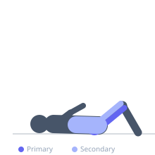
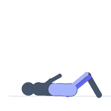

Exercise guide / Hip 90-90 Position — Hands Free
Hip 90-90 Position — Hands Free
The hip 90-90 hands-free variation requires the exerciser to maintain the 90-90 hip position (front leg externally rotated, back leg internally rotated, both knees at 90 degrees) without using the hands for support. This demands greater hip joint control, core stability, and hip mobility than the supported version. The challenge is to sit upright, balanced purely by the hip joint's ability to control the positions of both legs simultaneously. A key milestone in hip mobility rehabilitation.
Primary muscles
gluteus maximus
adductor magnus
Secondary muscles
psoas major
erector spinae
Stabilizers
transverse abdominis
Equipment
No Equipment (Bodyweight)


Starting position
- Sit on the floor in the 90-90 position with the right leg externally rotated in front and the left leg internally rotated behind. Both knees are at 90 degrees.
Setup
- Master the supported 90-90 position before attempting the hands-free version. Begin by lifting the hands just off the floor while maintaining balance.
Steps
- Step 1: Establish the 90-90 position with hands lightly on the floor for reference.
- Step 2: Slowly lift both hands off the floor and raise them in front of the chest or cross them over the chest.
- Step 3: Maintain the upright position with both shins as close to the floor as possible, without the hands.
- Step 4: Hold for the prescribed duration, then place the hands back down. Switch sides and repeat.
Coaching cues
- Sit tall — imagine a string pulling the top of your head toward the ceiling
- Breathe into the front hip — feel the external rotation holding without hands to assist
- The shins not touching the floor is fine — the work is in the hold, not the contact
Breathing
- Deep breathing throughout. Each exhale can allow deeper settling into the position.
Range of motion
- Both shins as low as possible to the floor, held without hands. The torso must remain upright.
Tempo
- Hold for 20-60 seconds per side. Build to 60 seconds.
Common mistakes
- Collapsing the torso toward the front leg as soon as the hands are lifted — the core must hold the upright position
- Cheating by keeping the fingertips lightly touching the floor — hands should be fully lifted
- Allowing the back knee to rise significantly off the floor — work on the hold even with the knee elevated if needed
Safety
- If the hip positions are acutely painful without hand support, return to the supported version
- Rounded lower back is common — focus on sitting taller rather than trying to get the shins to the floor
Training
- mobility: 1–2 reps
- mobility: 2–3 sets
- Rest: {'mobility': 30}